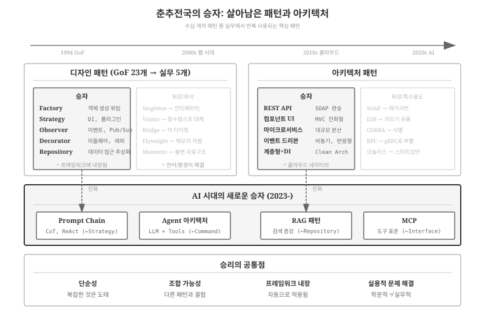
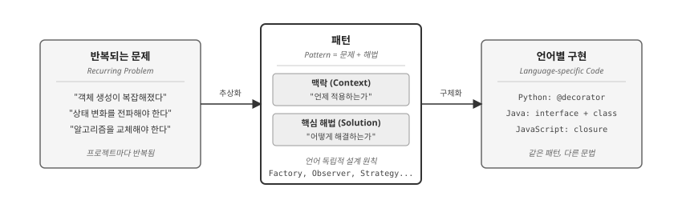
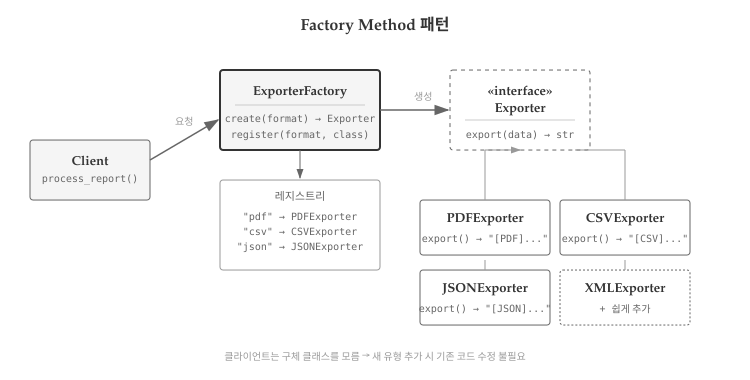
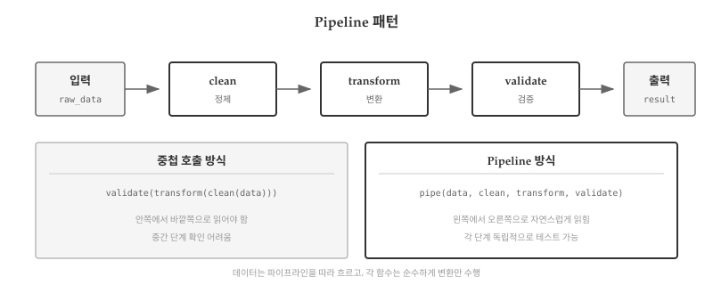

GoF가 1994년 23개 패턴을 정리한 이후 30년이 흘렀다. 그동안 어떤 패턴은 여전히 매일 쓰이고, 어떤 패턴은 잊혔다. 언어가 진화하면서 패턴 자체가 언어 기능으로 흡수되기도 했다. Iterator는 Python의 for 문과 제너레이터가 대신하고, Singleton은 모듈 수준 변수나 의존성 주입이 대체했다.
30년의 자연선택을 거쳐 살아남은 패턴은 무엇일까? 실무에서 반복적으로 마주치는 7개 패턴을 정리한다.
40.1 왜 7개만 남았나

그림 40.1: 살아남은 패턴
GoF 23개 패턴 중 실무에서 반복적으로 사용되는 패턴은 손에 꼽을 정도다. 나머지 패턴은 어디로 갔을까? 30년간의 자연선택을 분석하면 명확한 패턴이 보인다.
Singleton은 전역 상태 문제로 안티패턴 취급을 받으며 의존성 주입(DI)으로 대체되었다. 테스트가 어렵고 숨겨진 의존성을 만들어 코드 이해를 방해한다.
Template Method는 고차 함수로 대체되었다. 상속 기반 구조보다 함수를 인자로 전달하는 방식이 더 유연하다.
Visitor는 패턴 매칭과 멀티디스패치로 대체되었다. Rust의 match, Python의 match-case가 더 간결한 해법을 제공한다.
Flyweight는 메모리가 저렴해지면서 필요성이 줄었다. 문자열 인터닝 같은 경우는 언어 런타임이 자동으로 처리한다.
40.1.2 생존 조건
살아남은 패턴에는 공통점이 있다.
언어에 흡수되지 않았다. Factory, Observer, Strategy는 언어 기능만으로 해결되지 않는 설계 결정을 담고 있다. “어떤 객체를 생성할 것인가”, “누구에게 통지할 것인가”, “어떤 알고리즘을 사용할 것인가”는 문법이 아니라 설계자가 결정해야 하는 문제다.
안티패턴으로 인식되지 않았다. Factory는 Singleton과 같은 생성 패턴이지만, 결합도를 낮추는 방향이라 여전히 권장된다. 전역 상태를 만들지 않고 테스트 가능한 코드를 유도한다.
함수형 프로그래밍과 공존한다. Strategy는 고차 함수로 간결하게 구현되고, Observer는 반응형 프로그래밍의 기초가 되었다. OOP 전용이 아니라 패러다임을 초월한 아이디어인 패턴이 살아남았다.
패턴
분류
핵심 아이디어
데이터 과학 적용
Factory
생성
객체 생성 로직 분리
모델 팩토리
Strategy
행위
알고리즘 교체 가능
알고리즘 선택기
Observer
행위
상태 변화 전파
실험 추적
Decorator
구조
동적 기능 추가
전처리 체인
Pipeline
함수형
변환 함수 연결
ML 파이프라인
Partial
함수형
인자 미리 고정
설정 주입
표 40.1: 살아남은 6개 패턴과 데이터 과학 적용
40.2 패턴이란 무엇인가
건축가 크리스토퍼 알렉산더(Christopher Alexander)는 패턴을 “특정 맥락에서 반복적으로 발생하는 문제에 대한 해법”이라고 정의했다 [1]. 핵심은 반복과 변형이다—문제는 반복되지만, 해법은 상황에 맞게 변형된다.

그림 40.2: 패턴의 정의
왼쪽에는 프로젝트마다 반복되는 문제들이 있다. “객체 생성이 복잡해졌다”, “상태 변화를 여러 곳에 전파해야 한다”, “알고리즘을 런타임에 교체해야 한다”. 가운데 패턴은 맥락(언제 적용하는가)과 핵심 해법(어떻게 해결하는가)의 쌍으로 문제를 추상화한다. 오른쪽에는 언어별 구현이 있다—같은 Factory라도 Python에서는 딕셔너리 레지스트리로, Java에서는 interface + class로, JavaScript에서는 클로저로 구현할 수 있다.
“같은 해법을 수백만 번 다시 사용할 수 있되, 매번 똑같이 적용하지는 않는다.” — 크리스토퍼 알렉산더
40.3 생성: Factory
40.3.1 문제
클라이언트 코드가 생성할 객체의 정확한 클래스를 미리 알 수 없거나, 여러 클래스 중 런타임에 선택해야 할 때 문제가 발생한다.
# 문제: 직접 생성 시 결합도 증가class PDFExporter:def export(self, data):returnf"[PDF] {data}"class CSVExporter:def export(self, data):returnf"[CSV] {data}"class JSONExporter:def export(self, data):returnf"[JSON] {data}"# 클라이언트가 구체 클래스를 모두 알아야 함def process_report(data, format_type):if format_type =="pdf": exporter = PDFExporter()elif format_type =="csv": exporter = CSVExporter()elif format_type =="json": exporter = JSONExporter()else:raiseValueError(f"지원하지 않는 형식: {format_type}")return exporter.export(data)print(process_report("매출 보고서", "pdf"))
[PDF] 매출 보고서
process_report 함수가 모든 Exporter 클래스를 직접 알고 있다. XML 형식을 추가하려면 XMLExporter 클래스를 만들고, if-elif 체인도 수정해야 한다.
40.3.2 해법

그림 40.3: Factory 구조
Factory 패턴은 객체 생성 책임을 분리한다. 클라이언트는 형식 문자열만 전달하고, Factory가 적절한 객체를 반환한다.
XML 형식을 추가해도 기존 코드를 수정하지 않는다. 새 클래스를 만들고 등록만 하면 된다.
# 새 형식 추가 - 기존 코드 수정 없음class XMLExporter(Exporter):def export(self, data: str) ->str:returnf"<data>{data}</data>"ExporterFactory.register("xml", XMLExporter)print(process_report("설정 파일", "xml"))
Python의 @decorator 문법은 GoF Decorator 패턴과 이름은 같지만 다른 개념이다. Python 데코레이터는 함수나 클래스를 감싸는 함수로, 메타프로그래밍 도구다. 그러나 “기존 동작에 새 동작을 추가”한다는 점에서 유사하다.
import timefrom functools import wrapsdef timing(func):"""함수 실행 시간을 측정한다."""@wraps(func)def wrapper(*args, **kwargs): start = time.time() result = func(*args, **kwargs) elapsed = time.time() - startprint(f"[TIMING] {func.__name__}: {elapsed:.4f}초")return resultreturn wrapperdef retry(max_attempts=3):"""실패 시 재시도하는 데코레이터"""def decorator(func):@wraps(func)def wrapper(*args, **kwargs):for attempt inrange(1, max_attempts +1):try:return func(*args, **kwargs)exceptExceptionas e:print(f"[RETRY] 시도 {attempt}/{max_attempts} 실패: {e}")if attempt == max_attempts:raisereturn wrapperreturn decorator@timing@retry(max_attempts=2)def fetch_data(url): time.sleep(0.1)returnf"데이터 from {url}"result = fetch_data("https://api.example.com")print(result)
[TIMING] fetch_data: 0.1018초
데이터 from https://api.example.com
40.7 함수형: Pipeline
40.7.1 패턴 설명
Pipeline 패턴은 데이터가 여러 함수를 순차적으로 통과하며 변환되는 구조다. Unix의 파이프(|)나 pandas의 메서드 체이닝이 대표적 예다.
40.7.2 Python 구현
from functools importreducedef pipeline(*functions):"""함수들을 파이프라인으로 연결한다."""def piped(data):returnreduce(lambda x, f: f(x), functions, data)return piped# 개별 변환 함수들def strip_whitespace(text):return text.strip()def to_lowercase(text):return text.lower()def remove_punctuation(text):import stringreturn text.translate(str.maketrans('', '', string.punctuation))def split_words(text):return text.split()# 파이프라인 구성text_processor = pipeline( strip_whitespace, to_lowercase, remove_punctuation, split_words,)raw_text =" Hello, World! This is a TEST. "print(text_processor(raw_text))
['hello', 'world', 'this', 'is', 'a', 'test']
pipeline(f, g, h)(x)는 h(g(f(x)))와 같다. 각 함수가 독립적이므로, 순서를 바꾸거나 새 단계를 추가하기 쉽다.

그림 40.7: Pipeline 구조
40.7.3 실전 예제: 데이터 전처리
def filter_valid(records):return [r for r in records if r.get("value") isnotNone]def normalize_values(records):ifnot records:return records max_val =max(r["value"] for r in records)return [{**r, "value": r["value"] / max_val} for r in records]def add_category(records):def categorize(val):if val >=0.7: return"high"if val >=0.3: return"medium"return"low"return [{**r, "category": categorize(r["value"])} for r in records]data_pipeline = pipeline(filter_valid, normalize_values, add_category)raw_data = [ {"id": 1, "value": 100}, {"id": 2, "value": None}, {"id": 3, "value": 50},]for record in data_pipeline(raw_data):print(record)
Partial Application은 함수의 일부 인자를 미리 고정하여 새 함수를 만드는 것이다. f(a, b, c)에서 a=1을 고정하면 g(b, c) = f(1, b, c)가 된다.
40.8.2 Python 구현
from functools import partialdef greet(greeting, name, punctuation):returnf"{greeting}, {name}{punctuation}"# Partial Application: greeting 고정greet_hello = partial(greet, "안녕하세요")greet_goodbye = partial(greet, "안녕히 가세요")print(greet_hello("철수", "!"))print(greet_goodbye("영희", "~"))# 더 많은 인자 고정greet_formal = partial(greet, "안녕하십니까", punctuation=".")print(greet_formal("김 사장님"))
안녕하세요, 철수!
안녕히 가세요, 영희~
안녕하십니까, 김 사장님.
40.8.3 실전 예제: 설정 주입
Partial Application은 의존성 주입에 유용하다. 함수에 설정을 미리 주입하면 나중에 호출할 때 핵심 인자만 전달하면 된다.
def fetch_data(base_url, api_key, endpoint):returnf"[{base_url}/{endpoint}] with key={api_key[:4]}..."# 설정을 미리 주입fetch_from_api_v1 = partial( fetch_data, base_url="https://api.v1.example.com", api_key="secret123456")fetch_from_api_v2 = partial( fetch_data, base_url="https://api.v2.example.com", api_key="newsecret789")# 사용 시에는 endpoint만 전달print(fetch_from_api_v1(endpoint="users"))print(fetch_from_api_v2(endpoint="products"))
[https://api.v1.example.com/users] with key=secr...
[https://api.v2.example.com/products] with key=news...
40.9 패턴 조합
실제 시스템에서는 여러 패턴이 함께 사용된다. Factory가 Strategy를 생성하고, Observer가 상태 변화를 전파하는 구조가 흔하다.
scikit-learn의 Pipeline은 함수형 Pipeline 패턴의 데이터 과학 버전이다. 전처리, 피처 엔지니어링, 모델 학습을 하나의 파이프라인으로 구성한다.
from functools importreduce# ML 파이프라인의 단순화된 구현def make_pipeline(*steps):"""sklearn.Pipeline의 간소화 버전"""def pipeline(X):returnreduce(lambda data, step: step(data), steps, X)return pipeline# 전처리 단계들def fill_missing(data):return [0if x isNoneelse x for x in data]def scale(data): max_val =max(data) if data else1return [x / max_val for x in data]def to_features(data):return {"features": data, "n_samples": len(data)}# 파이프라인 구성preprocessing = make_pipeline(fill_missing, scale, to_features)raw_data = [100, None, 50, 200]result = preprocessing(raw_data)print(result)
세 질문 모두에 “예”일 때만 패턴을 적용하라. YAGNI(You Aren’t Gonna Need It) 원칙을 기억하자.
40.12.6 데이터 과학에서의 패턴
앞서 살펴본 것처럼, 살아남은 패턴은 데이터 과학 프로젝트에서도 동일한 문제를 해결한다. scikit-learn의 Pipeline은 함수형 Pipeline 패턴이고, MLflow의 실험 추적은 Observer 패턴이다. 웹 개발과 ML 엔지니어링이 다른 도메인처럼 보이지만, 설계 문제의 본질은 같다.
차이점은 불확실성의 수준이다. 웹 개발에서 Factory가 생성하는 객체는 결정적(deterministic)이지만, ML에서 모델 팩토리가 생성하는 모델은 확률적(probabilistic)이다. Strategy 패턴으로 교체하는 알고리즘이 명시적 규칙이 아니라 학습된 모델이라는 점이 다르다.
40.12.7 패턴만으로 해결할 수 없는 문제
전통적인 패턴에는 근본적인 한계가 있다. 모든 패턴은 개발자가 규칙을 명시적으로 작성한다는 전제 위에 서 있다. Strategy 패턴으로 알고리즘을 교체하려면 가능한 알고리즘을 미리 정의해야 하고, Factory 패턴으로 객체를 생성하려면 모든 케이스를 분기해야 한다.
문제는 모든 경우를 규칙으로 표현할 수 없다는 점이다. 고양이 사진인지 개 사진인지 구분하는 규칙을 if-else로 작성할 수 있는가? 자연어 질문에 적절한 답변을 생성하는 규칙을 명시할 수 있는가? 이러한 문제는 규칙 기반 패러다임—Software 1.0—의 영역을 넘어선다.
다음 파트에서는 규칙 대신 데이터에서 패턴을 학습하는 새로운 패러다임을 다룬다. 기계학습은 개발자가 규칙을 작성하는 대신 데이터와 모델이 규칙을 도출한다. 이것이 Software 2.0이며, 전통적인 디자인 패턴과는 완전히 다른 사고방식을 요구한다. 그러나 Factory, Strategy, Observer, Pipeline 같은 구조적 패턴은 ML 시스템에서도 여전히 유효하다—다만 그 안에 담기는 내용이 명시적 규칙에서 학습된 모델로 바뀔 뿐이다.
[1]
C. Alexander, S. Ishikawa, 와/과 M. Silverstein, A Pattern Language: Towns, Buildings, Construction. Oxford University Press, 1977.